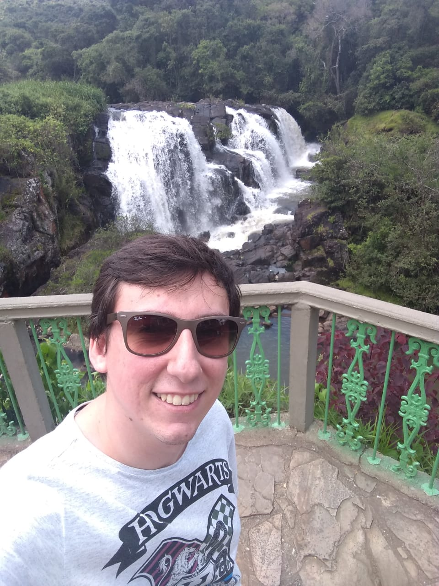

Sumário
- Dados pessoais
- Objetivo
- Formação
- Qualificações
- Trabalho Acadêmico
- Habilidades
Dados Pessoais

Nome: Yago Teixeira de Andrade
Brasileiro, solteiro, 25 anos
Data de Nascimento: 16/01/1995 - Naturalidade: Ribeirão Preto/SP
Residência: Rua Minas Gerais, 488 - apartamento 83
Centro - Poços de Caldas/MG
Telefone: (16)988272877
e-mail: yagoandrade51@gmail.com
Objetivo
Vaga de estágio na área de Engenharia Química.
Formação
- Ensino Fundamental Completo (concluído em 2009)
- Ensino Médio Completo (concluído em 2012)
- Bacharel em Ciência e Tecnologia pela Universidade Federal de Alfenas (UNIFAL) campus de Poços de Caldas (concluído em 2017)
- Graduação em Engenharia Química pela Universidade Federal de Alfenas (UNIFAL) campus de Poços de Caldas (ano de conclusão 2020? 2021?)
Qualificações
- Inglês (CNA, concluído em 2014)
- Curso de programação WEB EaD pelo IF Sul de Minas (2020)
Trabalho Acadêmico
- Trabalho de Conclusão de Curso (TCC) para o curso de Bacharel em Ciência e Tecnologia intitulado “Desenvolvimento de um manipulador robótico acionado por android”, orientado pelo professor Dr. Laos Alexandre Hirano.
Habilidades
- Pacote Office intermediário
- Noção básica de photoshop
- Noção básica de CSS baseado em curso aberto oferecido pela plataforma Alura.
- Noção básica de programação em C++
- Noção básica de manipulação de arduino